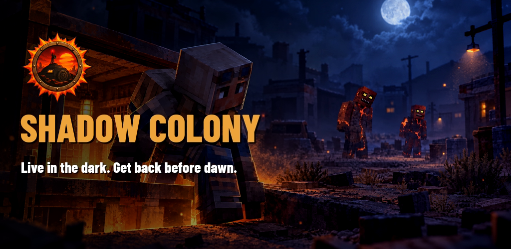

Short description
Live in the dark. Get back before dawn. Raid the sun-scorched surface at night, take what you can and get back to your shelter before sunrise burns you. Underground, build and lead a colony of up to 200 people.
About the game
One morning, the sun changed. The ozone layer tore open in three weeks, daylight became a killer and the survivors fled into metro tunnels and mine shafts. Those who stayed in the light didn't die. They changed. Now they roam the surface at night, and they hear everything.
Then the truth came out: ships in orbit had turned the sun into a weapon. At dawn they drop their robots to claim the surface. The robots rule this world now.
In Shadow Colony you lead one of the last shelters. Every night you ride the elevator up into a ruined world to loot crates, buildings and rare safes while mutants and robots hunt you. Every minute you stay means better loot, and a higher risk of being caught in the sunrise. Back underground, you dig rooms, grow food, raise livestock, purify water, train your people and defend the shelter against hordes, raiders and machines.
Your final goal: reach the Spaceport, repair the last colony shuttle the robots sealed away, and launch your people toward a new world.
Key features
- Night raids with a deadline: loot by night, return before dawn, or burn in the sun.
- Greed vs. fear: rare crates, legendary weapons, gear and blueprints; faint and you lose that night's finds.
- Two enemy factions: sound-hunting mutants that flee the sun, and sun-proof robots dropped from orbit.
- Deep underground colony: 3 floors, 144 rooms, up to 200 colonists with names, personalities and per-job mastery.
- Families and generations: children grow up, elders age, crises force hard decisions with lasting consequences.
- Shelter defense: guards hold the entrance while reinforcements run from the barracks.
- Four regions, four bosses, night conditions, seasons, Nightmare tiers and a New World meta-progression.
- Fair by design: free to play, no pay-to-win, fully offline.
Trailer
Download trailer (English, MP4) · Turkish version
Logo and key art

Hero art The sun changed
The sun changed
 Mutants
Mutants
 Orbital ships
Orbital ships
 Robots
Robots
 Underground colony
Underground colony
 Siege
Siege
 Colony shuttle
Colony shuttle
Screenshots
 Night raid
Night raid Rare crate
Rare crate Inventory
Inventory Squad
Squad Shelter
Shelter Decision
Decision Leader skills
Leader skills Boss night
Boss night
Usage
All assets on this page may be used freely for coverage, reviews, previews and videos about Shadow Colony. Trailer music: "Homecoming".